Red-Black sets¶
CTUnbalancedSet subclass: #CTRedBlackSet
instanceVariableNames: ''
classVariableNames: ''
package: 'Containers-RedBlackSet'

 
CTUnbalancedSet subclass: #CTRedBlackSet
instanceVariableNames: ''
classVariableNames: ''
package: 'Containers-RedBlackSet'
